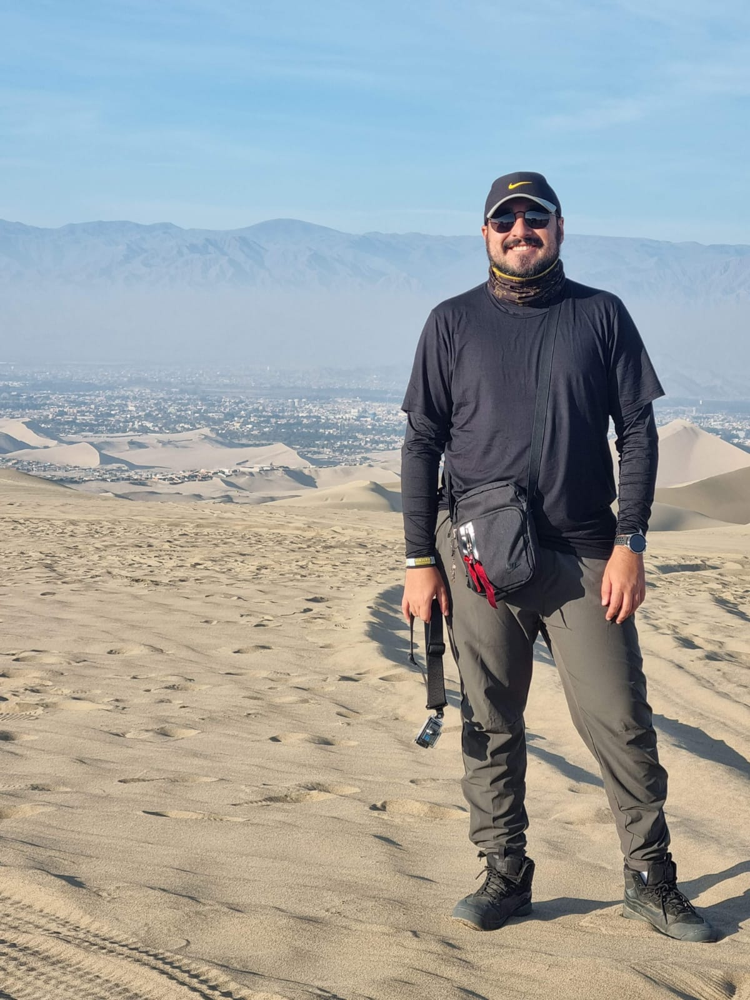

I am Marcelo Alves Rigoto, a Geographer from Universidade Federal Fluminense, currently in the second year of my MSc in the Copernicus Master in Digital Earth program.
I am now at Palacký University Olomouc (UPOL), specializing in GeoVisualization — deepening my expertise in cartographic design, visual analytics, and spatial storytelling. My first year was spent at Paris Lodron University of Salzburg, building a broad foundation across GIS, remote sensing, and geospatial technologies.
My professional background includes work as a GIS Technician at Imagem Geosistemas, where I developed automated workflows, dashboards, and web maps using Python and ArcGIS Online. At IBGE and Instituto Municipal Pereira Passos, I contributed to spatial analysis and urban geospatial projects using ArcGIS Pro and QGIS.
MORE ABOUT ME PROJECTS